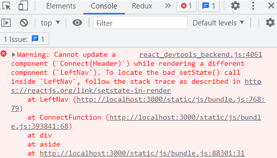

1. 项目介绍
1.1 项目描述
- 此项目为一个前后台分离的后台管理的 SPA, 包括前端 PC 应用和后端应用
- 包括用户管理 / 商品分类管理 / 商品管理 / 权限管理等功能模块
- 前端: 使用 React 全家桶 + Antd + Axios + ES6 + Webpack 等技术
- 后端: 使用 Node + Express + Mongodb 等技术
- 采用模块化、组件化、工程化的模式开发
1.2 项目功能界面
在线预览地址：点击这里
1.3 技术选型
1.4 前端路由
1.5 项目源码文件结构
2. 常用命令
2.1 npm/yarn 常用命令
yarn 命令文档：https://yarn.bootcss.com/docs/cli/
npm 命令文档：https://docs.npmjs.com/cli/v8/commands
设置淘宝镜像：
npm config set registry https://registry.npm.taobao.org
yarn config set registry https://registry.npm.taobao.org
初始化项目：
yarn init -y
npm init -y
下载项目的所有声明的依赖：
yarn install
npm install
下载指定的运行时依赖包：
yarn add package-name@3.2.1
npm install package-name@3.2.1 -S
下载指定的开发时依赖:：
yarn add package-name@3.2.1 -D
npm install package-name@3.2.1 -D
全局下载指定包：
yarn global add package-name
npm install package-name-g
删除依赖包：
yarn remove package-name, yarn global remove package-name
npm uninstall package-name, npm uninstall package-name-g
运行项目中配置的 script：
yarn run xxx
npm run xxx
2.2 git 常用命令
Git 在线参考手册：http://gitref.justjavac.com/
git init //初始化生成一个本地仓库
git add . //添加到暂存区
git commit –m "message" //提交到本地仓库
git remote add origin url //关联到远程仓库
git push origin master //推送本地 master 分支到远程 master 分支
git checkout -b dev //创建一个开发分支并切换到新分支
git push origin dev //推送本地 dev 分支到远程 dev 分支
git clone url //将远程仓库克隆下载到本地
git checkout -b dev origin/dev // 克隆仓库后切换到 dev 分支
git pull origin master //拉取远程最新的 master 分支
git merge master //将当前所在分支与 master 分支合并
3. 学习记录
记录一些开发经验和初次使用 React 开发项目时遇到的问题。
3.1 项目开发相关
封装 axios 请求；配置代理服务器解决 ajax 请求跨域问题；
优化了获取默认需要展开的子菜单（适用于多级子菜单，使用了回溯算法）；
优化了 Category 组件的编码；在 Category 组件中拆分出两个表单组件；
级联选择框默认选中数组 category 好像要在 options 初始化之前填充，否则貌似不生效；
添加商品和修改商品共用一个组件，根据是否向路由组件传递 product 对象来展示不同的内容；
postman 发送 post 请求时请求体的参数类型一般为 form-urlencoded，上传图片时请求体参数类型为 form-data；
上传图片的流程：upload 组件上传图片后将后台生成的 name 属性和 url 属性作为上传文件的 name，url 属性存储起来，url 由前缀加上 name 生成；更新商品时需要默认显示商品图片，商品的 imgs 属性中存储了之前的 name 属性值，由 name 属性值可得到 url，即可展示商品图片；
useNavigate 函数式路由跳转适合用于组件渲染后；Navigate 标签式路由跳转适合用于组件渲染之前；
函数组件不能给其设置 ref 属性，使用 forwardRef 和 useImperativeHandle 可给函数组件设置 ref 属性，用于父组件获取子组件中的表单数据等；使用 useImperativeHandle 用于子组件向父组件传值；
Effect Hook 用法：使用 setInterval 显示当前时间，这是一个需要清除的副作用，（还有其他的比如订阅消息），这些需要清除的副作用可能会变化，举个例子，在组件挂载后订阅好友的状态，并在卸载组件的时候取消订阅，期间我们可能会更新订阅，如果使用 class 定义组件就要在 componentDidUpdate 生命周期中，取消之前的订阅，订阅新的，（这样做的目的是防止引用丢失，类比 setInterval），如果使用 Effect Hook 将清除阶段写在回调函数中就很方便，effect 的清除阶段在每次重新渲染时都会执行，而不是只在卸载组件的时候执行一次；
Ref Hook 不仅可以用于 DOM refs。「ref」 对象是一个 current 属性可变且可以容纳任意值的通用容器，类似于一个 class 的实例属性；
函数组件内普通变量和 useState 和 useRef 的用法：当变量不会发生变化时使用 var 声明使用即可，当变量会发生变化时使用 useRef，当变量会发生变化且会引起页面内容的变化时使用 useState；
setState 在 react 相关的函数中执行是异步的（事务机制？）多次 setState 只会执行一次 render（重新渲染）；其他情况（如定时器）执行是同步的；setState 传入函数时，参数一定是最新的 state；
搭建 redux 开发环境：
- 安装依赖：yarn add redux react-redux redux-thunk redux-devtools-extension；
- 在 src 目录下创建 redux 文件夹，并在该文件夹下创建 store, reducer, actions, action-types 这些 js 文件，并初始化代码；
- 在项目入口 index.js 文件中引入 Provider 组件并传入 store 属性以应用 redux；
- 在 action.js 中创建工厂函数生成 action；用 connect 函数连接 UI 组件和 redux，函数中向 UI 组件中传入 store 中的 state 和 action 中的工厂函数（用于生成 action 并修改 store 中的 state）；
生产环境解决跨域问题：用 webpack 配置代理服务器，将前台的请求转发给代理服务器（与前台端口号相同，不存在跨域问题），由服务器请求后台接口，并将结果返回给前台；
开发环境解决跨域问题：
- 如果前台项目和后台项目独立运行（打包后执行 serve build 运行 build 目录下的前台应用），则使用 nginx 反向代理服务器，访问 nginx 服务器 8889 端口号，服务器会根据请求的路径区分前台路由还是后台路由，但使用 BrowserRouter 时会出现页面刷新时 404 问题；
- 如果前台项目打包后和后台项目在同一端口号运行（即将打包后 build 文件夹中的文件放在后台项目 node 的 public 文件夹下），则不存在跨域问题，但是需要解决使用 BrowserRouter 出现的问题。a. 问题：页面刷新时会出现 404 （找不到服务器资源）的错误；b. 原因：项目根路径后的 path 路径会被当作后台路由路径, 去请求对应的后台路由, 但没有相应路由；c. 解决：使用自定义中间件（如果 URL 不匹配任何静态资源，它应提供与你的应用程序中的 index.html 相同的页面）；注：如果使用 BrowserRouter 则不会出现 404 的错误，因为 # 后面的 URL 不会发送到服务器，一直请求的是 / 根路径下资源，服务器返回 index.html ；
使用 redux 遇到的问题：redux 中存储了头部标题的数据 headTitle，点击左侧的菜单项时，头部标题发生相应的变化，但是出现了如下报错： 报错信息表示在渲染 LeftNav 组件的同时不能更新 Header 组件，要我在正确的位置更新数据 setState()；于是我找到 LeftNav 组件，发现我确实在渲染组件的时候调用了更新 redux 中状态的函数，
props.setHeadTitle(title)，而 Header 组件中读取了 redux 中的该状态，所以控制台报这样的错误；于是我采用了另一种方法更新 redux 中的状态：在渲染 LeftNav 组件时先将需要更新的数据使用 useRef()存储起来，然后在 useEffect()中即组件挂载之后更新 redux 中的状态，果然修改之后就没有报错了；使用 jsonp 请求天气信息，暂未实现该功能；
存在的 bug：修改用户名后会出现重名的情况；
3.2 部署上线相关
- 一个网站部署上线的步骤：
- 准备云服务器，Xshell
- 用 Xshell 连接远程主机，连接成功后在终端下安装宝塔面板管理服务器；
- 在阿里云服务器上开启 3306 端口(mysql),8888 端口(宝塔面板),8889 端口(后台 api 接口)，宝塔面板也要开启 3306 和 8889 端口；
- 在宝塔面板创建数据库并导入数据库文件，后台 api 接口文件(修改数据库连接参数、app.js 中监听的端口号 8889)；
- 在 pm2 管理器下添加项目用于开启服务器应用，应用启动后用 postman 进行接口测试；
- 修改前台应用的请求基准地址，重新打包；在宝塔添加站点并将打包后的文件放在站点的根目录下；
注：这是前后台应用在不同端口运行的做法，这次的项目由于跨域问题前后台应用在同一端口运行。
在服务器端将数据导入 mongodb：进入 mongodb 的安装目录，
cd /www/server/mongodb/bin，为了方便将 json 文件复制到 bin 目录下，接着将数据导入数据库中，mongoimport -d server_db2 -c categorys --jsonArray categorys.json -u username -p password，参数说明：-d 指明使用的库, 本例中为” server_db2”，-c 指明要导入的表, 本例中为”categorys”，categorys.json 为数据文件，导入数据的时候会隐式创建表结构；导入成功后如下图所示：执行 mongo 命令启动服务，执行use server_db2进入 server_db2 数据库，db.auth('username','password')输入用户名和密码以授权，执行db.categorys.find().pretty()来查看表内的数据，可以看到表内确实成功导入了数据；部署上线时遇到的问题：
- 服务器端连接并配置 mongodb；解决方法：https://segmentfault.com/a/1190000040037436
- 一个 ip 怎么部署多个项目；解决方法：https://blog.csdn.net/weixin_51560103/article/details/121202456
- 跨域问题；解决方法：前后台应用放在同一端口号运行；使用 nginx 做反向代理也可，不过使用 BrowserRouter 时会出现页面刷新时 404 问题；
- 访问网站时 403；https://www.idcnote.com/bt/37.html